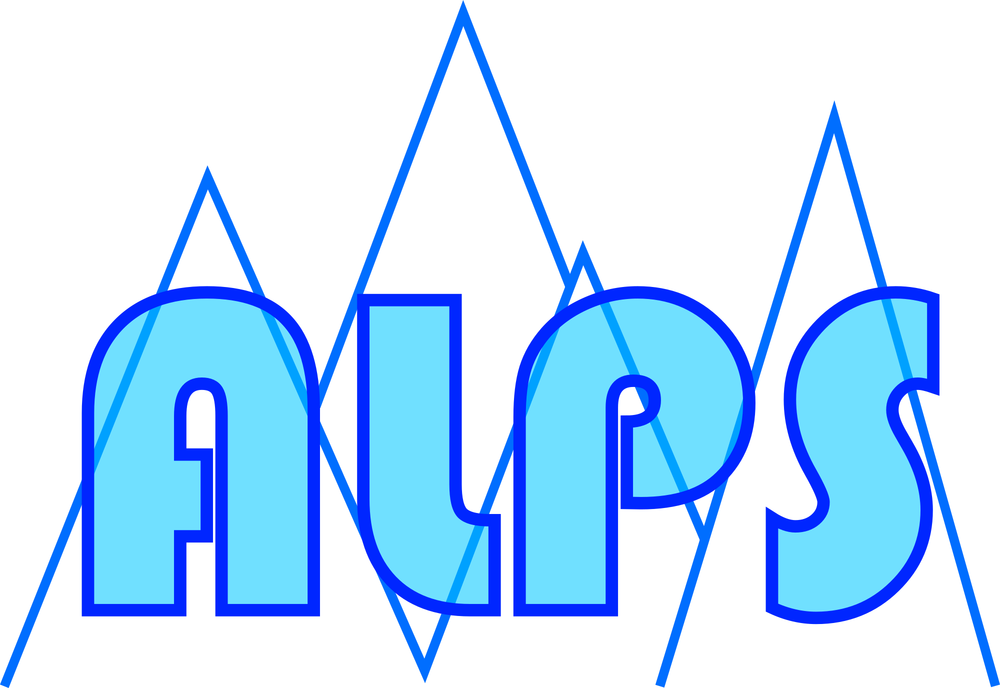

Readme


ALPS: The Arbitrary Linear Plasma Solver
This is the ALPS code: the Arbitrary Linear Plasma Solver.

Authors
Kristopher Klein (kgklein@arizona.edu)
Daniel Verscharen (d.verscharen@ucl.ac.uk)
Contents
- What is ALPS?
- Acknowledgements
- Installing the ALPS Code
- Running the ALPS Code
- License
1. What is ALPS?
ALPS is a parallelised numerical code that solves the Vlasov-Maxwell dispersion relation in hot (even relativistic) magnetised plasma. ALPS allows for any number of particle species with arbitrary gyrotropic background distribution functions supporting waves with any direction of propagation with respect to the background magnetic field.
If you use the code for a science publication, 1. please provide the code website github.com/danielver02/ALPS in the acknowledgements, 2. cite the DOI of the code:
@software{alps_2023_8075682,
author = {{Klein}, K. G. and
{Verscharen}, D. and
{Koskela}, T. and
{Stansby}, D.},
title = {danielver02/ALPS: Zenodo release},
month = jun,
year = 2023,
publisher = {Zenodo},
version = {v1.0.1},
doi = {10.5281/zenodo.8075682},
url = {https://doi.org/10.5281/zenodo.8075682}
}
- and cite the code paper:
The documentation of the code can be found on alps.space.
2. Acknowledgements
The development of the ALPS code was supported by NASA Grant NNX16AG81G. The code developers appreciate support from the UK Science and Technology Facilities Council (STFC) Ernest Rutherford Fellowship ST/P003826/1, STFC Consolidated Grants ST/S000240/1 and ST/W001004/1, and the Open Source Software Sustainability Funding programme from UCL's Advanced Research Computing Centre and UCL's eResearch Domain. We appreciate software engineering support by David Stansby and Tuomas Koskela from UCL.
3. Installing the ALPS code
For advice on the installation of the code, please check INSTALL.md
4. Running the ALPS code
ALPS works with input files that specify the plasma and numerical parameters for
the calculation. We recommend that you start by checking out the provided test
cases as a guidance for the creation of input files. These test cases are listed
in the scripts run_test.sh and run_test_suite.sh in the subfolder ./tests. All associated input files have
a name starting with test_.
You can execute the ALPS code through the following command:
mpirun -np <NP> ./src/ALPS <input_file.in>
where <NP> is the number of processors you want to use. This number must be greater
than or equal to 4, and it must be an even number. <input_file.in> is the input file
that includes all parameters for your run.
On some systems, depending on the MPI configuration, the oversubscribe flag is required. In this case, the above command must be replaced with
mpirun -np <NP> --oversubscribe ./src/ALPS <input_file.in>
For first-time users, we recommend working through our ALPS Tutorial. The key input parameters for ALPS are described on the ALPS Input page. The output format of ALPS is described on the ALPS Output page.
5. License
BSD 2-Clause License
Copyright (c) 2023, Kristopher G. Klein and Daniel Verscharen All rights reserved.
Redistribution and use in source and binary forms, with or without modification, are permitted provided that the following conditions are met:
-
Redistributions of source code must retain the above copyright notice, this list of conditions and the following disclaimer.
-
Redistributions in binary form must reproduce the above copyright notice, this list of conditions and the following disclaimer in the documentation and/or other materials provided with the distribution.
THIS SOFTWARE IS PROVIDED BY THE COPYRIGHT HOLDERS AND CONTRIBUTORS "AS IS" AND ANY EXPRESS OR IMPLIED WARRANTIES, INCLUDING, BUT NOT LIMITED TO, THE IMPLIED WARRANTIES OF MERCHANTABILITY AND FITNESS FOR A PARTICULAR PURPOSE ARE DISCLAIMED. IN NO EVENT SHALL THE COPYRIGHT HOLDER OR CONTRIBUTORS BE LIABLE FOR ANY DIRECT, INDIRECT, INCIDENTAL, SPECIAL, EXEMPLARY, OR CONSEQUENTIAL DAMAGES (INCLUDING, BUT NOT LIMITED TO, PROCUREMENT OF SUBSTITUTE GOODS OR SERVICES; LOSS OF USE, DATA, OR PROFITS; OR BUSINESS INTERRUPTION) HOWEVER CAUSED AND ON ANY THEORY OF LIABILITY, WHETHER IN CONTRACT, STRICT LIABILITY, OR TORT (INCLUDING NEGLIGENCE OR OTHERWISE) ARISING IN ANY WAY OUT OF THE USE OF THIS SOFTWARE, EVEN IF ADVISED OF THE POSSIBILITY OF SUCH DAMAGE.